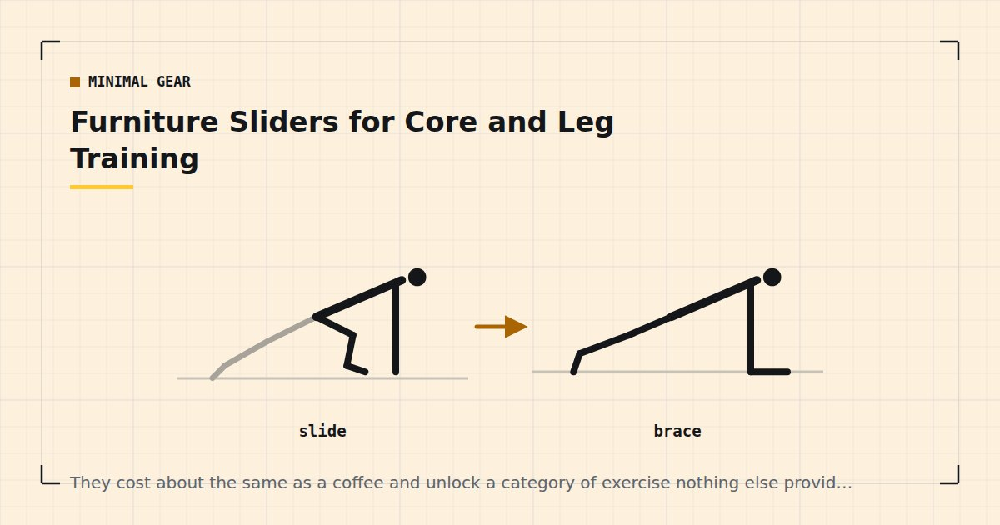

Minimal Gear
Furniture Sliders for Core and Leg Training
They cost about the same as a coffee and unlock a category of exercise nothing else provides: continuous tension through a long range, with no weight involved.

Furniture sliders are plastic or felt discs sold for moving heavy furniture. A pair costs very little, stores in a drawer, and unlocks exercises that are otherwise difficult or impossible without a machine.
They are, on a value-per-pound basis, the best equipment purchase in home training. A towel does most of the same job on a hard floor, so you can test the idea for free first.
What sliders actually do
They remove friction under one limb, which produces two things bodyweight training otherwise struggles with.
Continuous tension through a long range. In a sliding hamstring curl or a sliding lunge, the muscle never gets a rest position — there is no lockout and no bottom to sit in. That is a meaningfully different stimulus from a static-position exercise.
Eccentric loading of the hamstrings. This is the big one. The hamstrings are genuinely hard to train without equipment, and the sliding leg curl is one of very few bodyweight options that loads them properly — a gap noted in training legs at home without equipment.
Which type for your floor
This matters and is the most common mistake.
Hard floors — wood, laminate, tile, vinyl — need felt-bottomed sliders. Plastic on a hard floor grips or judders.
Carpet needs hard plastic-bottomed sliders. Felt on carpet does not slide at all.
Most packs sold for furniture include both types, which is why buying a furniture-moving pack rather than a fitness-branded one is usually better value.
Free alternatives: a folded towel on a hard floor works almost as well as a felt slider. Paper plates work on carpet. Socks on a hard floor also work, though see the safety note below.
The exercises
Sliding hamstring curl
Lie on your back, knees bent, heels on sliders, in a glute bridge position. Keeping your hips up, slowly extend both legs out until nearly straight, then pull the heels back in. Hips stay lifted throughout.
The best exercise on this list. Three sets of six to twelve, and expect to manage very few at first.
Sliding reverse lunge
One foot on a slider, slide it backwards into a lunge and pull it back. Continuous tension in the front leg and a strong stretch in the rear hip flexor.
Sliding lateral lunge
Slide one foot out to the side, sitting back into the standing leg, then pull it in. Trains the frontal plane, which almost nothing else in a home routine does.
Sliding mountain climber
From a push-up position, feet on sliders, draw one knee in and return under control. Smoother and considerably quieter than the usual version, which matters in a flat — see quiet home workouts.
Slider pike
Push-up position, feet on sliders, draw both feet toward your hands so your hips rise into a pike. A demanding core exercise and a good bridge toward the vertical pressing work in the bodyweight shoulder workout.
Slider body saw
Forearm plank with feet on sliders. Push back a few inches and pull forward, keeping the body rigid. A long-lever plank progression that is harder than it sounds — see the plank progression chart.
Sliding push-up
One hand on a slider, slide it out to the side as you lower, pull it back as you press. An accessible route toward asymmetric pressing, as described in how to build chest muscle without weights.
The hamstring curl, specifically
Worth its own section because it addresses a genuine gap.
Most home leg training is knee-dominant — squats, lunges, split squats — and the hamstrings work mainly as hip extensors during glute bridges. The knee-flexion function goes largely untrained, because there is no bodyweight equivalent of a leg curl.
The sliding leg curl fills that gap. It is also brutal: most people managing thirty push-ups will fail at five of these, which tells you how untrained the movement usually is.
Scaling it: start with one leg at a time with the other foot planted, or reduce the range by only sliding out halfway. Expect substantial soreness after the first session — this is a movement pattern your hamstrings genuinely have not done, and delayed soreness after novel eccentric work is expected rather than concerning.1
Most people who can do thirty push-ups fail at five sliding leg curls. That gap is the argument for owning sliders.
A slider session
Fifteen minutes, added to the end of a lower-body or core day rather than run alone.
- Sliding hamstring curl — 3 × 6–12
- Sliding reverse lunge — 3 × 8–12 each leg
- Slider pike — 3 × 8–12
- Slider body saw — 3 × 8–12
- Sliding lateral lunge — 2 × 10 each side
Rest ninety seconds between sets. These are more demanding than they look, particularly the first few sessions.
Progressing
Increase the range. Slide further. The simplest progression and the one with the most runway.
Slow down. A four-second slide out on a hamstring curl is considerably harder than a two-second one.
Move to one limb. Single-leg hamstring curls are a large jump and a genuine long-term goal.
Elevate. Feet on sliders with hands elevated changes the leverage on pikes and body saws.
Since the load is your own bodyweight, effort is the intensity variable — and light loads taken close to failure produce comparable adaptation to heavy ones.2
Two cautions
Hamstring cramping is common on the first few sessions of sliding leg curls, because the muscle is being asked to work in a range it rarely uses. Reduce the range and build up gradually rather than pushing through it.
Do not use socks on a hard floor for standing slider exercises. Socks work for floor-based work where you are already on the ground, but for sliding lunges the same lack of friction that makes them slide is what makes a fall likely. Use proper sliders under one foot and keep the standing foot gripping.
Where to go next
For the wider equipment picture, see the minimalist home gym guide. For other very cheap purchases worth making, see the best cheap home gym equipment under $50.
Frequently asked questions
What are furniture sliders used for in workouts?
They remove friction under one limb, which produces continuous tension through a long range. That unlocks sliding hamstring curls, sliding lunges, slider pikes and body saws — several of which have no good bodyweight equivalent otherwise.
Which furniture sliders should I buy for my floor?
Felt-bottomed sliders for hard floors such as wood, laminate and tile. Hard plastic-bottomed sliders for carpet. Most furniture-moving packs include both types, which is usually better value than a fitness-branded product.
Can I use a towel instead of sliders?
On a hard floor, a folded towel works almost as well as a felt slider. On carpet, paper plates work. It is worth testing the idea for free before buying anything.
Why are sliding hamstring curls so hard?
Because home leg training is almost entirely knee-dominant, so the hamstrings’ knee-flexion function goes largely untrained. Most people who can do thirty push-ups fail at five sliding leg curls, which shows how untrained the movement usually is.
Are furniture sliders safe?
Yes, with two cautions. Hamstring cramping is common in the first few sessions of leg curls, so build the range up gradually. And do not use socks on a hard floor for standing slider exercises — the same lack of friction that makes them slide makes a fall likely.
Sources and further reading
- Dupuy O, Douzi W, Theurot D, Bosquet L, Dugué B. “An Evidence-Based Approach for Choosing Post-exercise Recovery Techniques to Reduce Markers of Muscle Damage, Soreness, Fatigue, and Inflammation: A Systematic Review With Meta-Analysis.” Frontiers in Physiology, 2018;9:403. PubMed.
- Schoenfeld BJ, Grgic J, Ogborn D, Krieger JW. “Strength and Hypertrophy Adaptations Between Low- vs. High-Load Resistance Training: A Systematic Review and Meta-analysis.” Journal of Strength and Conditioning Research, 2017;31(12):3508–3523. PubMed.
- NHS. Strength and Flex exercise plan.
- Schoenfeld BJ, Ogborn D, Krieger JW. “Dose-response relationship between weekly resistance training volume and increases in muscle mass: A systematic review and meta-analysis.” Journal of Sports Sciences, 2017;35(11):1073–1082. PubMed.
Comments
Comments are not enabled yet. Add a hosted comment embed (Disqus, Commento, Giscus) inside this container when you are ready.